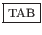
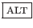
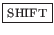
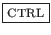
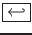
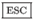
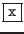
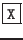
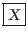
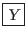

suivant: Index
monter: Bibliographie
précédent: Bibliographie
Table des matières
Index
Dans toute la suite de ce document, les conventions suivantes seront adoptées :
- % commande
-
représente la commande saisie par l'utilisateur au niveau de l'invite
(prompt) UNIX.
Cette commande obéira aux règles explicitées au niveau de la section
![[*]](crossref.png) .
.
- «
 » ou
» ou

-
représente le caractère « espace ».
-

-
représente le caractère « Tabulation ».
-

-
représente la touche « ALT ».
En général, la touche « ALT » se trouve de part et d'autre de la
barre d'espace du clavier alpha-numérique sur les claviers étendus 102 touches.
-

-
représente la touche « SHIFT » ou « »,
ou encore « Maj ». Cette touche permet de passer en mode
« majuscule ».
En général, la touche « SHIFT » se trouve de part et d'autre
du clavier alpha-numérique sur les claviers étendus 102 touches.
-

-
représente la touche « CONTROL » ou « CTRL »,
ou encore « ctrl ».
En général, la touche « CTRL » se trouve de part et d'autre en bas
du clavier alpha-numérique sur les claviers étendus 102 touches.
-

-
représente la touche « RETURN » ou « ENTRÉE »
ou encore «
 ».
En général, la touche « RETURN » se trouve à droite
du clavier alpha-numérique.
-

-
représente la touche « ESCAPE » ou « esc ».
En général, la touche ESCAPE se trouve en haut à gauche
sur les claviers étendus 102 touches.
-

-
représente la touche du clavier permettant d'obtenir le caractère
« x ».
-

-
représente la combinaison des touches
et
.
-
-

-
représente l'appuie simultané sur les touches « X » et
« Y » du clavier.
suivant: Index
monter: Bibliographie
précédent: Bibliographie
Table des matières
Index
baudry@esme.fr